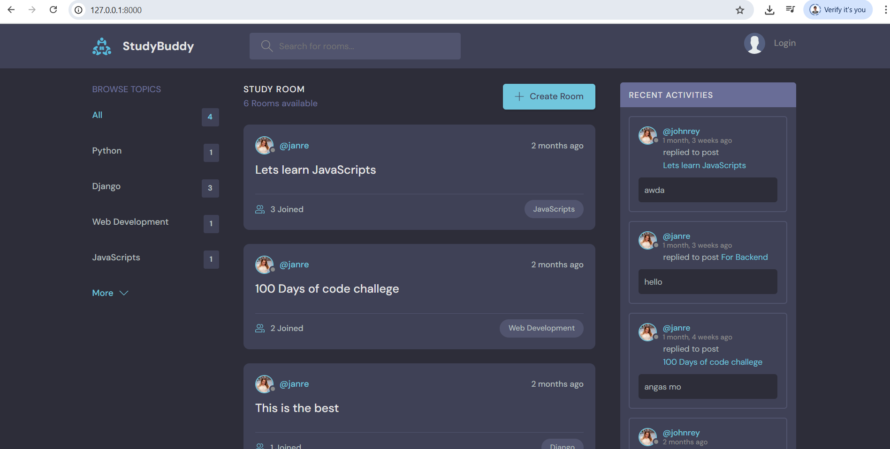

My Projects! 🌟

DjangoProject
This project is a study group finder web app built following a YouTube tutorial. It was a hands-on exercise in creating a Django application from scratch. I set up the project, designed database models (study rooms, user profiles), created views, and implemented dynamic templates. Key features include user login, study room creation/joining, and real-time chat. This process improved my understanding of Django's MVT architecture, URL routing, form handling, and database management. The visual shows the working web app for students to connect
MoreTourism Website
My website is for local and foreign visitors. The website is more about viewing the history of the Philippines and the beautiful places like Baguio, Ifugao, Boracay, etc.
More